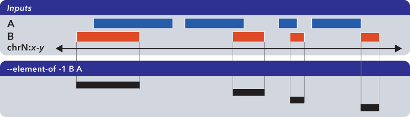
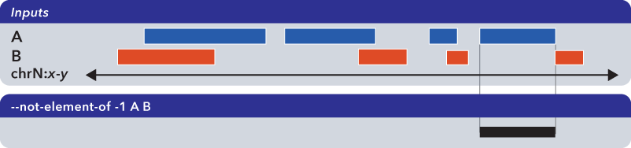
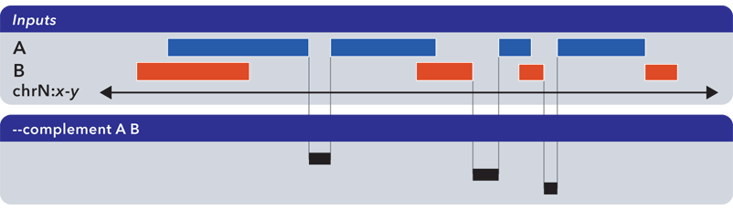
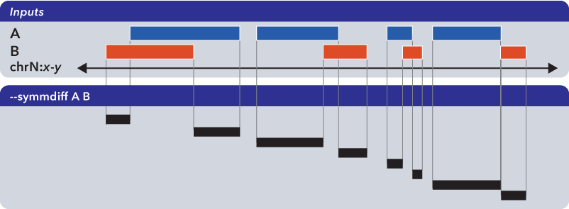
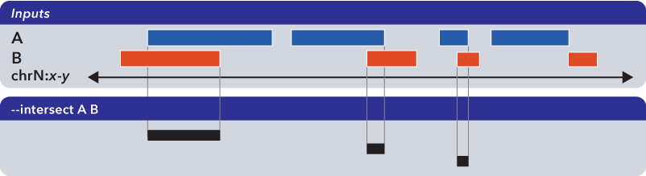
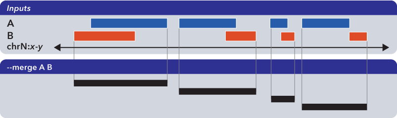
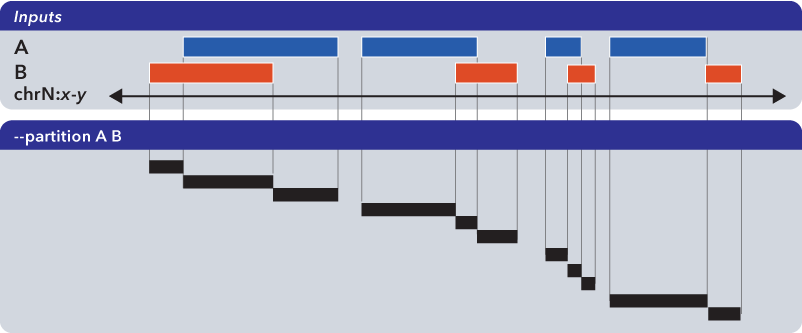

6.1.1. bedops¶
bedops is a core tool for finding relationships between two or more genomic datasets.
This is an important category of problems to solve. As examples, one might want to:
- Know how much overlap exists between the elements of two datasets, to quantitatively establish the degree to which they are similar.
- Merge or filter elements. For example, retrieving non-overlapping, “unique” elements from multiple BED files.
- Split elements from multiple BED files into disjoint subsets.
The bedops program offers several Boolean set and multiset operations, including union, subset, and difference, to assist investigators with answering these types of questions.
Importantly, bedops handles any number of any-size inputs at once when computing results in order to maximize efficiency. This use case has serious practical consequences for many genomic studies.
One can also use bedops to symmetrically or asymmetrically pad coordinates.
6.1.1.1. Inputs and outputs¶
6.1.1.1.1. Input¶
The bedops program reads sorted BED data and BEDOPS Starch-formatted archives as input.
Finally, bedops requires specification of a set operation (and, optionally, may include modifier options).
Support for common headers (including UCSC track headers) is offered through the --header option. Headers are stripped from output.
6.1.1.2. Usage¶
The bedops program takes sorted BED-formatted data as input, either from a file or streamed from standard input. It will process any number of input files in parallel.
If your data are unsorted, use BEDOPS sort-bed to prepare data for bedops. You only need to sort once, as all BEDOPS tools read and write sorted BED data.
Because memory usage is very low, one can use sorted inputs of any size. Processing times generally follow a simple linear relationship with input sizes (e.g., as the input size doubles, the processing time doubles accordingly).
The --help option describes the set operation and other options available to the end user:
bedops
citation: http://bioinformatics.oxfordjournals.org/content/28/14/1919.abstract
version: 2.4.1
authors: Shane Neph & Scott Kuehn
USAGE: bedops [process-flags] <operation> <File(s)>*
Every input file must be sorted per the sort-bed utility.
Each operation requires a minimum number of files as shown below.
There is no fixed maximum number of files that may be used.
Input files must have at least the first 3 columns of the BED specification.
The program accepts BED and starch file formats.
May use '-' for a file to indicate reading from standard input (BED format only).
Process Flags:
--chrom <chromosome> Process data for given <chromosome> only.
--ec Error check input files (slower).
--header Accept headers (VCF, GFF, SAM, BED, WIG) in any input file.
--help Print this message and exit successfully.
--help-<operation> Detailed help on <operation>.
An example is --help-c or --help-complement
--range L:R Add 'L' bp to all start coordinates and 'R' bp to end
coordinates. Either value may be + or - to grow or
shrink regions. With the -e/-n operations, the first
(reference) file is not padded, unlike all other files.
--range S Pad input file(s) coordinates symmetrically by S.
This is shorthand for: --range -S:S.
--version Print program information.
Operations: (choose one of)
-c, --complement [-L] File1 [File]*
-d, --difference ReferenceFile File2 [File]*
-e, --element-of [-number% | -number (in bp)] ReferenceFile File2 [File]*
by default, -e -100% is used.
-i, --intersect File1 File2 [File]*
-m, --merge File1 [File]*
-n, --not-element-of [-number% | -number (in bp)] ReferenceFile File2 [File]*
by default, -n -100% is used.
-p, --partition File1 [File]*
-s, --symmdiff File1 File2 [File]*
-u, --everything File1 [File]*
Example: bedops --range 10 -u file1.bed
NOTE: Only operations -e|n|u preserve all columns (no flattening)
6.1.1.3. Operations¶
To demonstrate the various operations in bedops, we start with two simple datasets A and B, containing genomic elements on generic chromsome chrN:

These datasets can be sorted BED or Starch-formatted files or streams.
Note
The bedops tool can operate on multiple inputs, but we show the results of operations on just two sets to help demonstrate the basic principles.
6.1.1.3.1. Everything (-u, –everything)¶
The --everything option is equivalent to concatenating and sorting BED elements from multiple files, but works much faster:

As with all BEDOPS tools and operations, the output of this operation is sorted.
Note
The --everything option preserves all columns from all inputs. This is useful for multiset unions of datasets with additional ID, score or other metadata.
6.1.1.3.2. Element-of (-e, –element-of)¶
The --element-of operation shows the elements of the first (“reference”) file that overlap elements in the second and subsequent files by the specified length (in bases) or by percentage of length.
In the following example, we search for elements in the reference set A which overlap elements in B by at least one base:

Elements that are returned are always from the reference set (in this case, set A).
Note
The --element-of option preserves all columns from the first (reference) input.
Note that –element-of is not a symmetric operation, as demonstrated by making B the reference set:
{kind=link}
Note
The argument to --element-of is a value that species to degree of overlap for elements. The value is either integral for per-base overlap, or fractional for overlap measured by length.
In sum, --element-of (-e) produces exactly everything that --not-element-of (-n) does not, given the same overlap criterion (which is 100% by default).
Note
For a more in-depth discussion of --element-of and how overlaps are determined with three or more input files, please review the BEDOPS forum discussion on this subject.
6.1.1.3.3. Not-element-of (-n, –not-element-of)¶
The --not-element-of operation shows elements in the reference file which do not overlap elements in all other sets. For example:
{kind=link}
As with the --element-of (-e) operator, the overlap criterion for --not-element-of (-n) can be specified by length (in bases) or by percentage of length. Similarly, this operation is not symmetric—the order of inputs will specify the reference set.
Note
The --not-element-of operatior preserves columns from the first (reference) dataset.
Note
The same caveat applies to use of --not-element-of (-n) as with --element-of (-e), namely that the second and all subsequent input files are merged before the set operation is applied. Please review the BEDOPS forum discussion thread on this topic for more details.
6.1.1.3.4. Complement (-c, –complement)¶
The --complement operation calculates the genomic regions in the gaps between the contiguous per-chromosome ranges defined by one or more inputs. The following example shows the use of two inputs:
{kind=link}
Note
Note this computed result will lack ID, score and other columnar data other than the first three columns that contain positional data. That is, computed elements will not come from any of the input sets, but are new elements created from the input set space.
Note
For a more in-depth discussion on using --complement with left and right bounds of input chromosomes, please review the BEDOPS forum discussion on this subject.
6.1.1.3.5. Difference (-d, –difference)¶
The --difference operation calculates the genomic regions found within the first (reference) input file, excluding regions in all other input files:

Note
As with --element-of and --not-element-of, this operation is not symmetric. While --not-element-of preserves all columns of elements found in the reference input and allows one to define overlaps, the --difference operator simply reports every genomic range as three-column BED, which does not overlap elements found in the second and subsequent input files by any amount.
6.1.1.3.6. Symmetric difference (-s, –symmdiff)¶
The --symmdiff operation calculates the genomic range that is exclusive to each input, excluding any ranges shared across inputs:
{kind=link}
Tip
It has been observed that --symmdiff (-s) is the same as --difference A B unionized with --difference B A, but --symmdiff runs faster in practice.
6.1.1.3.7. Intersect (-i, –intersect)¶
The --intersect operation determines genomic regions common to all input sets:
{kind=link}
6.1.1.3.8. Merge (-m, –merge)¶
The --merge operation flattens all overlapping and adjoining elements into contiguous regions:
{kind=link}
Tip
The preceding example shows use of --merge (-m) with two inputs, but the merge operation works just as well with one input, collapsing regions which overlap or which are directly adjoining.
6.1.1.3.9. Partition (-p, –partition)¶
The --partition operator splits all overlapping input regions into a set of disjoint segments. One or more input files may be provided; this option will segment regions from all inputs:
{kind=link}
Note
As with --merge, --complement and other “computing” operations, note the lack of ID, score and other columnar data in this computed result.
6.1.1.3.10. Per-chromosome operations (–chrom)¶
All operations on inputs can be restricted to one chromosome, by adding the --chrom <val> operator.
Note
This operator is highly useful for cluster-based work, where operations on large BED inputs can be split up by chromosome and pushed to separate cluster nodes. (See the Efficiently creating Starch-formatted archives with a cluster documentation for a demonstration of this technique in action.)
6.1.1.3.11. Range (–range)¶
The --range operation works in conjunction with other operations.
When used with one value (--range S), this operation symmetrically pads all elements of input sets by the specified integral value S. When the specified value is positive, every genomic segment grows in size. An element will grow asymmetrically to prevent growth beyond base position 0, if needed. Otherwise, when negative, elements shrink, and any element with zero (or less) length is discarded.
Alternatively, when used with two values (--range L:R), this operation asymmetrically pads elements, adding L to each start coordinate, and adding R to each stop coordinate. Negative values may be specified to grow or shrink the region, accordingly.
This option is immediately useful for adjusting the coordinate index of BED files. For example, to shift from 1-based to 0-based coordinate indexing:
$ bedops --range -1:-1 --everything my1BasedCoordinates.bed > my0BasedCoordinates.bed
And, likewise, for 0-based to 1-based indexing:
$ bedops --range 1:1 --everything my0BasedCoordinates.bed > my1BasedCoordinates.bed
Note
The --range value is applied to inputs prior to the application of other operations (such as --intersect or --merge, etc.).
Padding elements with bedops is much more efficient that doing so with awk or some other script, and you do not need to go back and resort your data. Even symmetric padding can cause data to become unsorted in non-obvious ways. Using --range ensures that your data remain sorted and it works efficiently with any set operation.
Also, note that the --element-of and --not-element-of operations behave differently with --range, in that only the second and subsequent input files are padded.
6.1.1.4. Starch support¶
The bedops application supports use of Starch-formatted archives as inputs, as well as text-based BED data. One or multiple inputs may be Starch archives.
Tip
By combining the --chrom operator with operations on Starch archives, the end user can achieve improved computing performance and disk space savings, particularly where bedops, bedmap and closest-features operations are applied with a computational cluster on separate chromosomes.
6.1.1.5. Error checking (–ec)¶
Use the --ec option in conjunction with any aforementioned operation to do more stringent checking of the inputs’ compliance to bedops requirements, including sorting checks, delimiter checks, among others.
To demonstrate, we can deliberately introduce a typo in dataset A, using the --ec option to try to catch it:
$ bedops --ec --everything BEDFileA
May use bedops --help for more help.
Error: in BEDFileA
First column should not have spaces. Consider 'chr1' vs. 'chr1 '. These are different names.
See row: 3
The typo introduced was the addition of a space within the third line of dataset A.
Note
Use of the --ec option will roughly double the running times of set operations, but it provides stringent error checking to ensure inputs and outputs are valid. --ec can help check problematic input and offers helpful hints for any needed corrections, when problems are detected.
6.1.1.6. Tips¶
6.1.1.6.1. Chaining operations¶
You can efficiently chain operations together, e.g.:
$ bedops --range 50 --merge A | bedops --intersect - B > answer.bed
In this example, elements from A are padded 50 bases up- and downstream and merged, before intersecting with coordinates in B.
6.1.1.6.2. Sorting inputs¶
For unsorted input, be sure to first use sort-bed to presort the data stream before using with bedops. Unsorted input will not work properly with BEDOPS tools.
Tip
If you will use an initially-unsorted file more than once, save the results of sorting. You only need to sort once! BEDOPS tools take in and export sorted data.

Table Of Contents
- 6.1.1. bedops
- 6.1.1.1. Inputs and outputs
- 6.1.1.2. Usage
- 6.1.1.3. Operations
- 6.1.1.3.1. Everything (-u, –everything)
- 6.1.1.3.2. Element-of (-e, –element-of)
- 6.1.1.3.3. Not-element-of (-n, –not-element-of)
- 6.1.1.3.4. Complement (-c, –complement)
- 6.1.1.3.5. Difference (-d, –difference)
- 6.1.1.3.6. Symmetric difference (-s, –symmdiff)
- 6.1.1.3.7. Intersect (-i, –intersect)
- 6.1.1.3.8. Merge (-m, –merge)
- 6.1.1.3.9. Partition (-p, –partition)
- 6.1.1.3.10. Per-chromosome operations (–chrom)
- 6.1.1.3.11. Range (–range)
- 6.1.1.4. Starch support
- 6.1.1.5. Error checking (–ec)
- 6.1.1.6. Tips